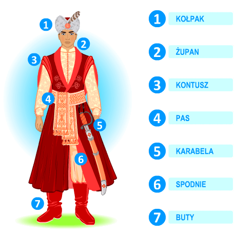

Strój męski

Strój uczniowski to obecnie gorący temat. Białe koszule to zło i pogwałcenie tradcji naszej szkoły czy pierwszy krok do wyrażenia samego siebie? Na szczęście nie mam takiego problemu, bo od zawsze mogłam nosić te dwa kolory kiedy tylko chiałam. Jednakże próbując zakończyć ten spór, proponuję następujące rozwiązanie:
Malwina Jarosz 4D
2023